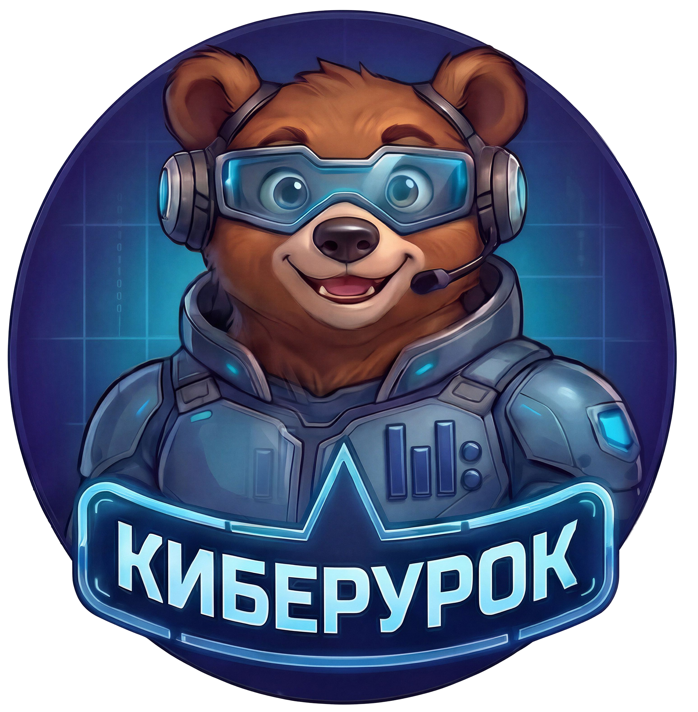

Делимся практиками онлайн
Заполните форму и представьте педагогическую находку: методику, видео, изображение, чек-лист, раздаточный материал и другое.
Мы задаем направления — а Вы расширяете горизонты.
Наша задумка — собрать опыт тех, кто работает с курсом на практике. Именно Вы видите, какие задания увлекают школьников, где им требуется дополнительная поддержка и какие методические решения действительно помогают учиться.

Заполните форму и представьте педагогическую находку: методику, видео, изображение, чек-лист, раздаточный материал и другое.
Мы задаем направления — а Вы расширяете горизонты.• Выступления спикеров • Пять ярких практик
• Семь лабораторий • Финальные презентации.